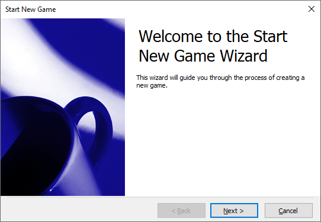
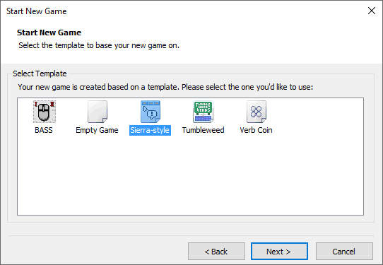
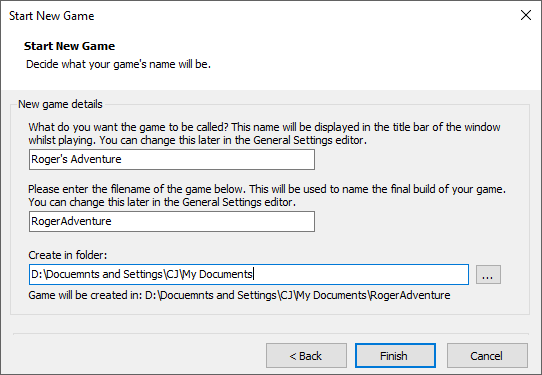
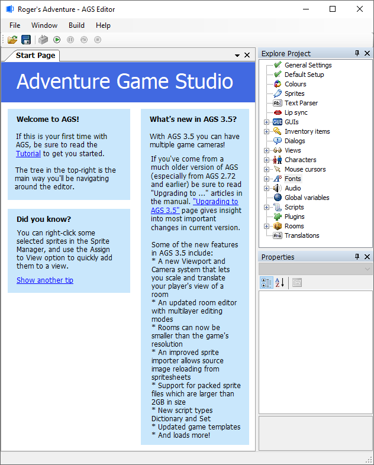
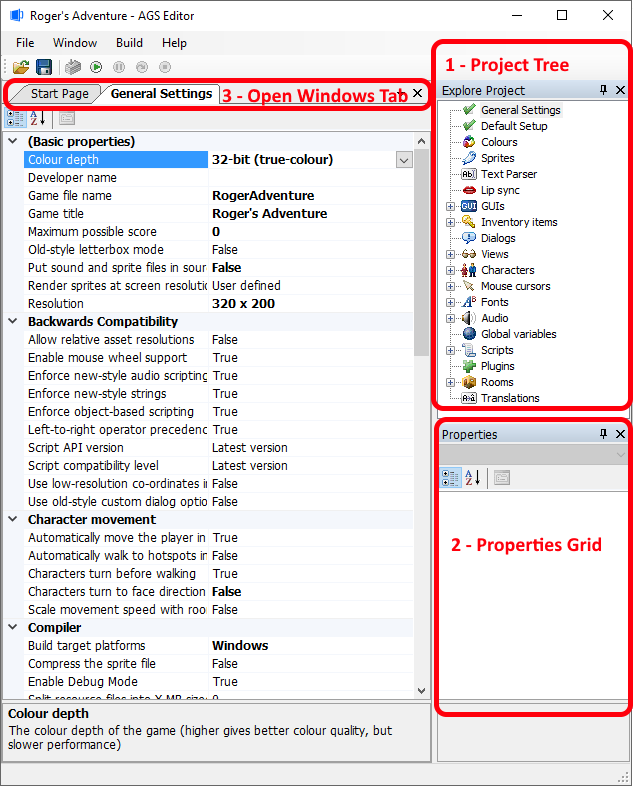
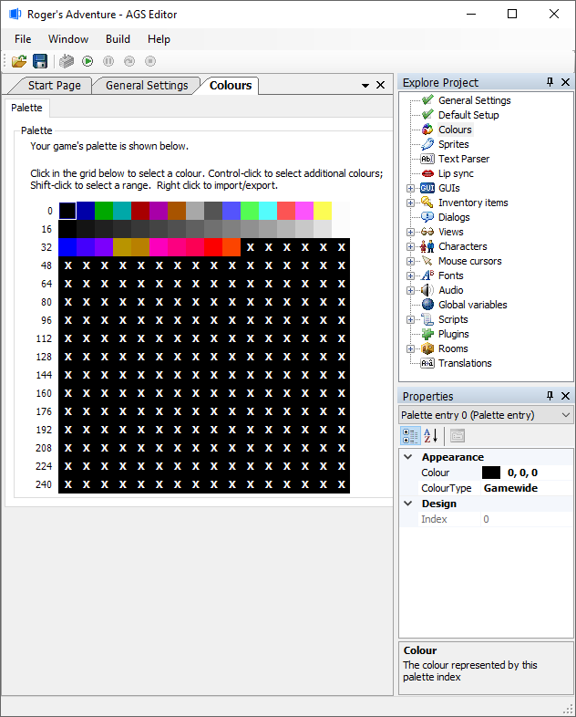
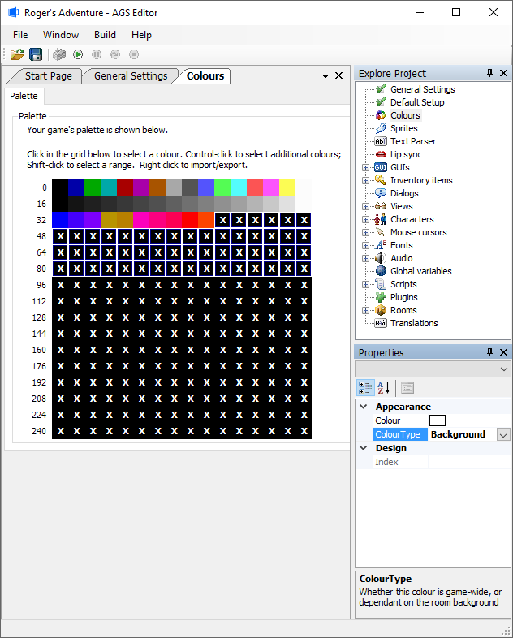

Getting Started with AGS
So, you've downloaded AGS. You want to make an adventure game. But where do you start?
NOTE: Before we start, this tutorial was made using v3.5 of AGS. If you have a newer version, there may be minor inconsistencies in the screenshots where extra options have been added and so forth, but most of what's here should still apply.
Creating the game
Start up the AGS Editor by double-clicking the AGSEditor.exe file, and you should be greeted by the following screen:

Make sure that "Start a new game" is selected, and click Continue. You'll be presented with the Start New Game wizard:

So, without further ado, click Next, and you'll see the Select Template screen:

Here, you need to choose which template you're going to use for your new game. AGS comes with several, and you can find others for download on the AGS Forums.
The "Sierra-style" template is what we'll be using, as it has classic Sierra adventure game UI and comes with some default graphics to get you started quickly.
NOTE: The "Empty Game" template is something you may want to use later on when you're familiar with AGS as it comes with no default graphics at all.
So, select "Sierra-style" and click Next.

Finally, you need to decide on what to call your game.
- In the first box you can type the full name for your game. This is what will be displayed in the game title bar when it's running in a window, and it's used for a couple of other things too. For the purposes of this tutorial, I'm going to call it the incredibly lame "Roger's Adventure", but you can use whatever you like.
- The second box asks you for the game's file name. This is only used for the name of the folder that your game is created in, and the name of the final EXE file you compile.
- The third box allows you to choose where AGS should put the game files -- the default is your My Documents folder, and I'm going to stick with that.
Click the Finish button, and after a short wait you should be presented with the main AGS Editor window:

So, there's your new game, ready and waiting for you to create it!
Starting off
The main way that you navigate around the editor is using the Project Tree in the top-right corner, which allows you to access all the various parts of your game. Let's start by scrolling to the top of the Project Tree, and double-clicking the "General Settings" node:

This screenshot above demonstrates three of the main editor features.
- The Project Tree, as we've already discussed, gives you access to the various parts of your game.
- The Properties Grid, in the bottom-right, is where item-specific properties are accessed. It's not used in the Game Settings window, but we'll see it in action soon!
- Finally, the Open Windows tab bar at the top the AGS Editor allows you to have several windows open at once, and they are shown as tabs so that you can easily switch between them. (NOTE: You may use the Close button (X) at the end of the Open Windows tab bar to close a window once you're finished with it.)
Now, since we're on the Game Settings pane, let's briefly examine the various options we have in front of us. Make sure these options are enabled to begin with:
- Character movement -> Characters turn before walking - If the character is facing right, and you click to move him left, he'll rotate around before starting to move. This is what the Sierra and LucasArts point-and-click games did, and looks a bit more professional.
- Compiler -> Enable Debug Mode - Since we are going to be developing the game, we want the assistance of the debug features in the engine. This allows you to do things like teleport to different rooms, give yourself all the inventory items, and so forth. You would un-check this before compiling the final version of the game when it's complete.
- Visual -> Pixel-perfect click detection - Improves the game playability by making sure that clicking transparent regions of objects won't trigger them.
Personally, I would always enable these three options when starting a new game. As you get a feel for AGS, you can decide what suits you best, and change these options again later.
Color choices
Now, at this stage we really need to decide whether we want to create a palette-based (8-bit, 256-color) game, or a hi-color (16-bit or 32-bit) game.
256-color games are much more complicated to make due to having to deal with the palette, they are not supported by the Direct3D or OpenGL graphics drivers, and may not run well on some modern graphics cards. Although they can give you the authentic retro feel, unless you really need to use palette-cycling effects it's recommended that you stay away from making new 256-color games.
- It's highly recommended that you go with 32-bit color since many modern computers don't support 8 or 16 bit screen modes. Also 32-bit color is required for the use of alpha transparency.
- Imported graphics are set to the chosen color depth. Should you change your mind later, you would have to re-import all the graphics.
- If you are following this tutorial, then you need to stay with the 32-bit color choice.
Creating a 16-bit or 32-bit color game
- Setting the Color Depth: Back on the General Settings pane, check out the very top option in the list. It's called "Color depth", and all you have to do is change it to your desired color depth. A warning message will prompt you to make sure. Confirm it, and you're done.
You can skip the next section and make your way down to "Game Resolution"...
Creating a 256-color game
NOTE: If you are following this tutorial to continue to work on "Roger's Adventure" game, then do not adjust your game to be 256-color.
Setting the Color Depth: Back on the General Settings pane, check out the very top option in the list. It's called "Color depth", and all you have to do is change it to your desired color depth. A warning message will prompt you to make sure. Confirm it, and you're done.
Adjusting the Palette: Double-click the "Colors" node in the project tree. You should see this:

The palette display has a grid with the 256 color slots on it. The first 40 colors are game-wide colors, which means that those palette slots have a fixed color throughout the game, in every single room.
The remaining slots, marked "X", are background colors and vary from room to room. This allows for different types of background to use different ranges of colors.
The default palette setup is a little badly weighted. Your GUI and main character graphics will have to use just the game-wide colors, since they are shown in more than one room. Therefore, unless you want a grayscale main character, the colors displayed are probably not enough.
So, let's swap some background colors for some game-wide ones. Select the first "X" slot, then hold shift and click on the last slot in the row marked "80". The screen should look as follows:

We can now see the Properties Grid of the AGS Editor in action. Change the "ColorType" setting from "Background" to "Gamewide", and you'll see the selected "X"s turn into various colors.
If you select one of these colors you'll see its RGB color values in the Properties Grid, where you can adjust the color of that slot. If you don't want to do this manually for every color, you can set up slots 42-95 in another paint package, save a BMP file, and then right-click on the selected slots and choose the "Replace selected slots from file..." option.
Which colors you use is up to you, and your choice will likely depend on the color scheme you're going for with your graphics.
NOTE: You should set up the palette as well as you can now, because changing it later may require you to re-import some graphics.
Game Resolution
Having decided on our color depth, the other important decision to make at this stage is what resolution we want the game to run at. Higher resolutions allow you to have more detailed graphics, but they need more memory and some operations may run more slowly.
- Setting the Game Resolution: Go back to the General Settings pane, and select your chosen resolution from the "Basic Properties" -> "Resolution" drop-down list.
Next Chapter: Part 2 - Creating Your First Room